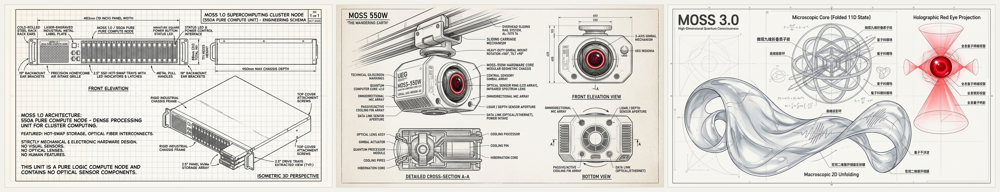

钱胤卿 · AI产品经理
智能化解决方案专家 · 从“重定制项目制”向“标准化平台底座”跃迁
浙江嘉兴 / 长三角 · 33岁 · 中国人民大学《信息分析》硕士结业
10年+ 复杂中台与数据要素平台架构经验，深耕长三角产业与政企生态，擅长 「平台底座抽象 + 数据闭环 + AI Agent 工程化」。 直击国内 AI 落地中“底层模型强但业务调用门槛高、多源数据割裂、跨行业重复造轮子”的痛点，担任串联算法研发与行业客户的“技术与业务翻译官”。
主导编制 20+ 项数据合规流通标准，制定统一接入规范（Schema），避免平台沦为外包定制团队。
端到端设计“全量数据摸底 ➔ 清洗治理 ➔ 场景模型推演 ➔ 业务闭环赋能”数据价值化路径。
PMP + 阿里云原生双认证，曾协调华为、腾讯、移动及地方经信局/城投，标杆带动全链路采纳。
双旗舰自研产品最新动态
把“平台底座抽象 + 数据闭环 + AI Agent 工程化”方法论落地为两套真实可运行的工业级系统：一个聚焦企业级 AI 神经中枢（MOSS），一个聚焦政企软件接管去毒与集约运维（OpsHandover Kit）。
MOSS：跨生态企业神经中枢与「替人指挥百态 Agent」领航主脑
灵感致敬《流浪地球》550W 与《三体》智子。从早期的轻量开源智能体内核，全面演进为既能独立闭环服务人类（无外部执行器时自包含运行），更能站在异构软件与桌面 Agent 之上统筹全局上下文的企业级主脑。
最新技术动态与 N × 1 × M 通用范式
打通外部微信商机流、钉钉本地暗采集与图片 OCR 补采、协同信标文档、随身会议硬件与 MES/ERP Webhook，双平台工作语义自动归类。
落地 v4.15 统一非结构化与表格数据智能分块标准（合并单元格广播填充 + 启发式表头探测 + 行级自包含切片），编织「客户-合同-项目星轨-现金流」数字海马体。
7×24 现金流双引擎主动吹哨（回款节点 & 范围超纲拦截），并通过标准 Context Pack 协议调度桌面 Agent、RPA 与业务 API 闭环执行。
MOSS 三代跨维度演进工程图谱（1.0 算力节点 ➔ 2.0 具身 550W ➔ 3.0 智子高维展开）

MOSS 实机系统视窗与工程架构全览（6 组核心界面）

1. 智能体核心控制台 (Workbench) Console
常驻全局导航枢纽，实时呈现 Agent 运行状态、上下文意图流动及业务调度总览。

2. 4M1E 实体与全要素图谱 4M1E Graph
人、机、料、法、环物理语义关联，为大模型推理提供坚固的产业上下文证据链。

3. 艾宾浩斯时序记忆引擎 Memory
模拟人类大脑遗忘曲线，实现长短期记忆自主加权、动态蒸馏与时序对齐。

4. MOSS 极简三层架构蓝图 Architecture
上层意图调度 ➔ 中层记忆图谱与执行内核 ➔ 底层工具与异构算力基础设施。

5. 多端协同与企业通讯连接器 Connectors
无缝连接企业办公端（微信/钉钉）、移动终端与本地守护进程，实现端云安全协同。

6. 软硬一体自主智能终端 (CMF) Hardware
探索自主可控本地算力盒子与端侧 AI 一体机的 CMF 工业设计理念。
政企软件集约化运维移交套件：终结外包接管“黑盒瘫痪”
面向政府数字化集约运维中心与企业 IT 共享中心（SSC），以「系统运行鲁棒性（系统遭遇异常或高压时稳定不崩的容错能力）」为第一核心指标，在系统移交准入前彻底扫除账实分裂、私打热补丁、明文 PII 泄露与 K8s 资源超卖暗病。
内置 Win64 断网离线 Python 运行时，兼容银河麒麟 V10 / 统信 UOS。内嵌 JVM 0xCAFEBABE 字节码解析器，无需 JDK 即可穿透识别线上私打热补丁的“幽灵方法/幽灵类”；内存级二代身份证（GB 11643）/手机/银行卡敏测，原始敏感数据 100% 零落盘。
政务模式强控等保三级、商密 SM2/3/4 与人大金仓/达梦核对；企业模式豁免非强制信创，强力拦截 AGPL/SSPL 传染性开源协议商业污染、缺失 CI/CD 与多租户 CORS 凭证劫持。
自动构建 前端 API ➔ 微服务路由 ➔ 物理表 全息血缘与僵尸接口台账；自动剥离 JDWP 调试后门、纠正 -jar 后置失效参数，并按客观负载输出 S/M/L 加固版 K8s YAML 与算力降本测算。
千万级标杆工程与十年实战履历
长期扎根长三角产业与政企数字化一线，独立驻场完成从需求调研、可研编制、标准规范制定到多方大生态（华为/腾讯/地方经信局）联合交付全生命周期闭环。
宁波高新区“新材云创”科创大脑
针对新材料研发周期长、产业链上下游数据割裂痛点，在无同类积累背景下独立驻场完成整体架构设计、可研报告与交互原型，打通“创新链-产业链-供应链”数据底座，实现科研资源、算力服务与产业需求精准匹配。
获华为公司（总包联合体）点名书面表扬，直接奠定公司与华为后续大规模生态合作基石。
台州“五城十链”数智赋能平台
面对台州十大重点制造业产业链企业分散、底层数据标准不一现状，构建“城投投资 + 平台运营”新模式，制定统一企业与产业数据治理规范，摸清区域工业本底并沉淀可复用数据资产与智能分析模块。
作为民营企业技术专家借调至台州市经信局消费品工业处主持相关工作，验证极强跨部门推动力。
嘉兴数据要素流通平台 & 中药产业大脑
攻克多方数据“不敢流、不会流、标准不统一”瓶颈（能力直接迁移至 AI 高质量语料数据集建设）。主导 20+ 项接入规范、安全审查机制与标准化产品矩阵设计。
获浙江南湖数据发展集团书面点名表扬信与磐安县长点名感谢，个人独立推动订单破千万。
Career Evolution Timeline (2014 – 2026)
主导公司级数据要素服务与合规流通平台架构抽象，编写 20+ 项标准规范，个人独立开拓订单破千万，获全国数据要素大赛二等奖。
主导/核心参与宁波新材云创(5050万)、台州五城十链(3350万)、金华中药大脑(960万)、杭州数字经济平台(1105万)，获年度最佳售前与大项目推进奖。
负责智慧环保/消防/农业与智能交通“感知终端+指挥平台”项目，主导义乌智能交通(960万)、嘉兴红船云(200万)，获年度销售冠军。
主导红船干部学院云桌面(400万)、智慧校园医疗(900万)等云计算虚拟化交付；在中青华云服务中央政法委、共青团中央大数据监测。
物理 AI 深度洞察：从 NVIDIA Omniverse 看平台型产品设计
Omniverse 绝非单纯的“3D 画图软件”，而是面向物理 AI（Physical AI，理解现实重力、碰撞、流体规律的 AI）与工业数字孪生的操作系统底座。它通过统一 3D 数据连接标准串联全行业孤岛，从而垄断底层算力消耗——这与国内产业平台破局高度同源。
Sim-to-Real 虚实迁移与标杆样板工作流
人形机器人和自动驾驶不能靠“上网看文章”学会干活，现实摔坏成本太高。Isaac Sim / DRIVE Sim 提供 100% 遵循真实物理定律的虚拟训练场，让 AI 低成本试错几百万次后再迁移到现实世界。
不要只交付空洞的“底层技术平台”，必须基于底座组装 2-3 个高价值标杆参考工作流（如产线节拍仿真使规划效率提升 30%+），用开箱即用的行业样板拉动生态采纳。
国产物理 AI 平台对标（以索辰“开物”为例）与平台型 PM 破局路径
国内拥有比肩国际的全学科高精度 CAE 求解器与实体物理实验室（如嘉兴共享仿真试验中心），破局关键在于用现代软件工程与 AI Agent 思维封装硬核物理计算。
牵头制定统一三维资产与数据接入 Schema，打通“风洞/传感器实采数据 ↔ 高保真 CAE 仿真 ↔ 代理模型训练数据”闭环流水线。
告别大而全的单体繁琐菜单，把自研流体/结构/电磁求解器与代理模型（Surrogate Model）封装为标准 SDK/API，让业务线搭积木调用。
物理 AI 最缺带标注的物理场景数据，平台需内置“域随机化 + 自动 3D 框/深度/语义标注”流水线，形成不可替代的数据飞轮。
针对工业仿真陡峭学习曲线，植入“自然语言交互 Agent”——一句话自动完成 3D 场景加载、边界条件配置与风切变求解，大幅提升团队采纳率。
个人 AI / Agent 工程化工具流与全栈实践
日常深度使用 Cursor、大语言模型与 Mermaid 架构工具，构建高确定性的个人产品研发流水线，将需求验证与研发对齐周期缩短 50%+：
教育背景与专业资质
随时保持联系与深度交流
无论是关于 AI 产品经理 / 智能化解决方案岗位合作、物理 AI 与数据要素平台底座设计，还是 MOSS 与政企集约运维套件共创，欢迎随时沟通。